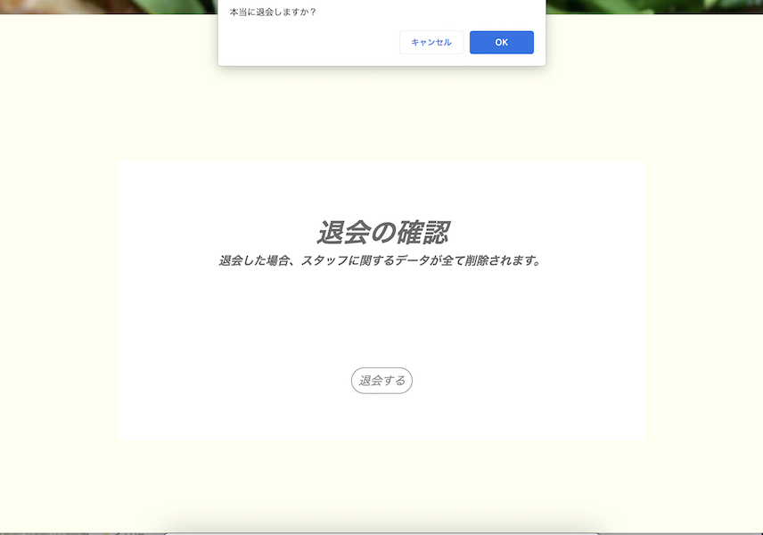
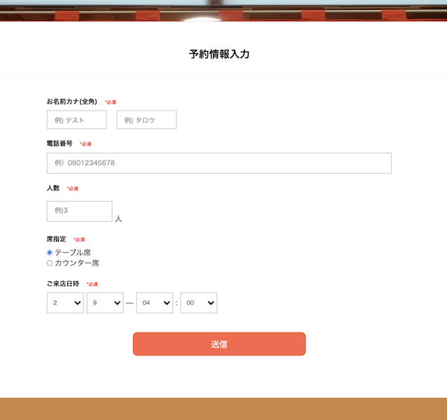

居酒屋 角助

開発環境
Ruby / Ruby on Rails / MySQL / GitHub / Heroku / Visual Studio Code / Trello
-
概要
制作時間 250時間 URL https://izakaya-kakusuke.herokuapp.com/ ID techcamp PASS 0607 -
動作テスト
テスト用アカウント
mail aaa@gmail.com PASS aaa000
OUTLINEアプリケーションの概要
オリジナルアプリケーションとして、友人が働く居酒屋のホームページを作成しました。
主な機能は、予約機能、口コミ機能です。
トップページにアクセスすると、お店で提供している料理の写真、お店へのアクセス方法が表示されます。ヘッダーにあるメニューボタンをクリックすると、各ページに遷移するためのプルダウンが表示されます。
基本的に会員登録をしなくても利用することができます。口コミへのリプライのみ、会員登録をしたスタッフが行えるようになっています。
-
開発に至った経緯
友人が働いている居酒屋のホームページを作成したいと考えていました。大手予約サイトにお店の情報は載っていますが、それだけでは魅力を伝えきれないという課題がありました。
そこで、宣伝・予約・口コミがそこで完結するホームページを作成すれば、よりそのお店を知ってもらえると考えました。
友人に写真やサイトに記載したい文言を提供してもらいながら、ぐるなびやホットペッパーの仕組みを参考にして、開発を行いました。
-
開発で工夫したこと
1つ目が友人へのヒアリングです。将来的に使えるように、どんな機能を取り入れたら良いか実際に聞き、予約機能や口コミ機能を優先的に実装しました。
2つ目がenumを用いてのDBへの保存です。予約フォームでform_withのラジオボタンを実装したかったため、それを用いて席指定に関する値を保存できるようにしました。
3つ目が退会機能です。退職したスタッフをスタッフ紹介ページに表示させないように、スタッフであれば誰でも退会ができるように実装しました。
-
今後実装したいと思っていること
1つ目が、予約情報のDB管理をより細かくできるようにすることです。
ダブルブッキングを防ぐために、人数や席指定の項目が上限に達したら、予約フォームに遷移できなくなる仕組みを作りたいです。また、不要になった予約情報を1日ごとに削除したいと考えています。2つ目が、管理機能を設けることです。
誰でも口コミを投稿できるため、不適切な投稿は削除できるようにしたいです。また、現在トップページに表示されているスタッフ新規登録ボタンなどを管理者以外には見えないようにするなど、見た目にも配慮したサイトにしたいです。